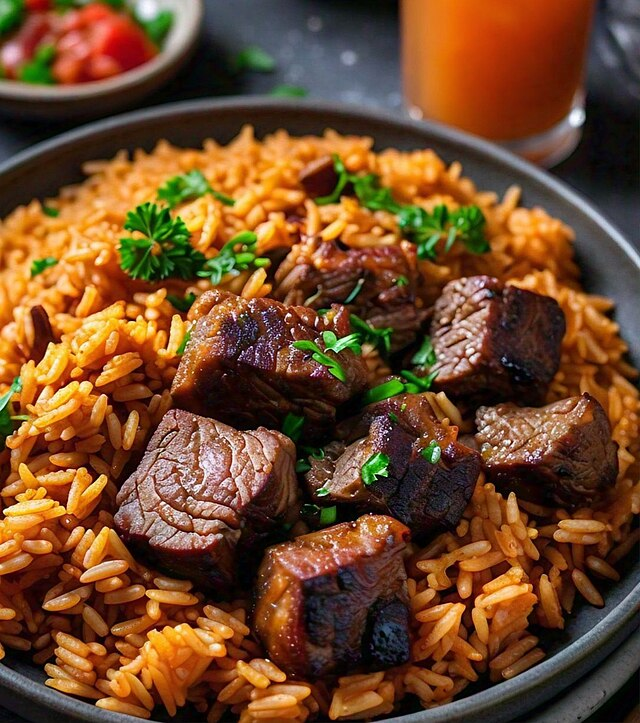

Nigerian Jellof Rice

Photo by User: DeletedUser
Wikimedia Commons
/ CC BY-SA 4.0
Description
ollof rice is a popular one-pot West African dish made with long-grain rice
cooked in a flavorful tomato and red pepper-based sauce with onions, spices,
and other seasonings. It's a staple dish that varies by region, with notable
styles including Senegalese, Ghanaian, and Nigerian jollof,
and can be served with meat, fish, or vegetables. The dish's ingredients
are simmered together, infusing the rice with its signature rich flavor,
and it is often served at celebrations.
Ingredient
- 4 medium fresh plum, or Roma tomatoes, 3 coarsely chopped,
1 sliced for garnish, divided
- 1 medium red bell pepper, coarsely chopped
- 4 small red onions, 2 coarsely chopped, 2 thinly sliced, divided
- 1/4 Scotch bonnet pepper, optional
- 3 cups vegetable stock, chicken or beef stock, or water,
divided, more as needed
- 10 ounces (300 grams) stewing beef, cut into 3/4-inch pieces
- 2 teaspoons curry powder, preferably a Caribbean blend, divided
- 2 teaspoons dried thyme, divided
- Salt, to taste
- Freshly ground black pepper, to taste
- 1/4 cup neutral oil, divided
- 3 small to medium dried bay leaves
- 2 tablespoons tomato paste
- 2 teaspoons unsalted butter, divided
- 2 cups converted long-grain rice, such as Uncle Ben's, rinsed
Steps
- Gather the ingredients.
- In a blender, combine the 3 chopped tomatoes, red bell pepper,
the 2 chopped onions, Scotch bonnet, if using,
and 1 1/2 cups of stock or water. Blend on high,
in batches if necessary, until smooth, 1 to 2 minutes.
You should have about 6 to 6 1/2 cups.
- Transfer to a large saucepan. Bring to a boil, then reduce the heat
to low and simmer, stirring occasionally, until the mixture is reduced by half,
about 15 minutes. Remove from the heat and set aside.
- In a medium bowl, toss the beef with 1 teaspoon curry powder,
1 teaspoon dried thyme, and a generous pinch of salt and pepper.
- Heat 2 tablespoons of oil in a large Dutch oven or other heavy-duty
pot over medium heat. When the oil shimmers, add the beef in batches,
if necessary, cooking until golden on all sides, about 7 minutes per batch.
Remove the meat as it becomes done to a plate. Set aside.
- In the same Dutch oven, add the remaining 2 tablespoons of oil.
When the oil shimmers, add 1 of the sliced onions, the remaining
1 teaspoon curry powder, the remaining 1 teaspoon dried thyme,
bay leaves, and a large pinch each of salt and pepper. Cook,
stirring constantly, over medium heat until the onion
becomes translucent, about 2 minutes.
- Add the tomato paste and 1 teaspoon of butter,
stirring constantly until the butter melts
- Add the reduced tomato-pepper mixture to the pot, the remaining 1 1/2 cups of stock,
the meat, and any juices from the plate. Raise the heat to high and bring to a boil.
Reduce the heat to medium-low, cover, and continue to cook until the meat begins
to tenderize, about 15 minutes.
- Taste for seasoning and adjust to your liking—salt and curry powder
should be the most forward taste elements.
- Add the rice and stir well to coat the grains.
- Cover with a doubled piece of foil or parchment paper. Cover the pot with a lid—this
will seal in the steam and lock in the flavor. Reduce the heat to low and cook until
the rice and meat are tender, about 30 minutes. Check the rice after 20 minutes.
If the pot is dry and the rice is still al dente, add 1/4 cup more broth or water.
Stir the mixture to combine. Cover with foil and the lid. Continue to cook,
checking every 5 minutes until the rice and meat are tender.
- Stir in the remaining teaspoon of butter until it melts. Garnish with the remaining sliced
onion and the remaining sliced tomato. Remove from heat and serve immediately.
Home
{kind=link}